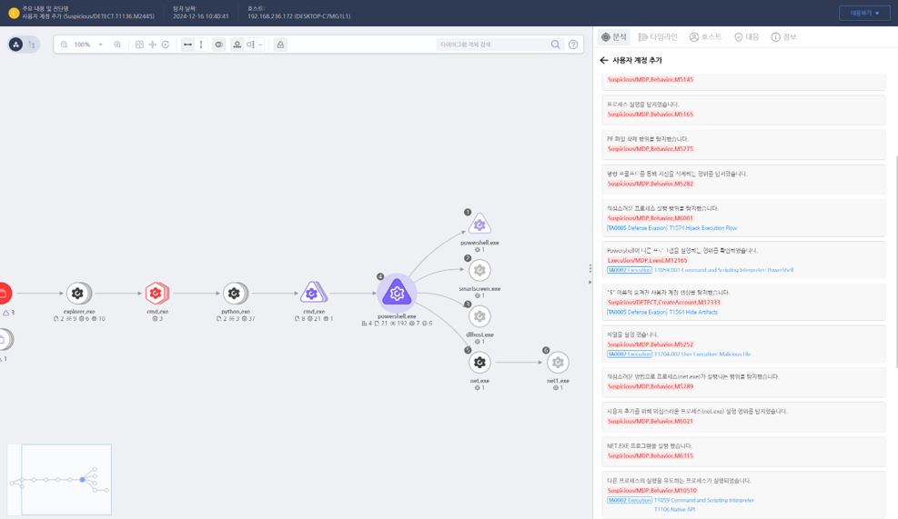

T1564.000.01 $ 이름의 숨겨진 사용자 계정 생성
D3FEND
MITRE ATT&CK 액션을 기준으로 대응 방안을 작성
Detection
- process_name : powershell.exe AND
- Action : Process-Create AND
- Target : net.exe AND
- cmdline : "user $" AND
- cmdline : "/add"
Detection(EDR)

Response
- 이벤트 분석
- SAM(Security Account Manager) 데이터베이스에서 비정상적인 $로 끝나는 계정을 탐지.
- Windows 이벤트 로그의 사용자 계정 생성 이벤트(예: Event ID 4720) 및 $ 계정 활동(Event ID 4624 - 로그온 성공) 확인.
- 비정상 사용자 계정의 그룹 소속 여부(예: Administrators 그룹 포함) 점검.
- 격리 및 조사
- $로 끝나는 사용자 계정의 SID(Security Identifier)와 최근 사용 기록을 분석.
- 해당 계정의 원격 로그온 시도(IP 주소, 시간대)를 조사하여 외부 공격자 여부 확인.
- 숨겨진 계정을 생성한 명령어와 실행 파일의 출처를 조사하여 악성코드 여부 분석.
- 정보 차단
- $로 끝나는 계정의 속성 변경 기록 및 관련 권한을 철저히 차단.
- Windows 보안 설정에서 SAM 데이터베이스 보호를 강화하여 비인가 계정 생성 방지.
Mitigations
- 사용자 계정 관리 강화
- Net User 및 PowerShell 명령어를 통한 계정 생성을 탐지하기 위해 명령어 사용 제한 적용.
- $로 끝나는 사용자 계정 생성 시도 시 자동 차단 규칙을 AD(Active Directory) 그룹 정책에 추가.
- 계정 활동 탐지 및 알림
- $를 포함한 사용자 계정을 탐지하는 SIEM 규칙을 설정하여 관리자에게 즉시 알림.
- $ 계정의 사용 로그 분석을 자동화하여 장기적으로 비인가 활동을 추적.
- 보안 정책 개선
- 운영 환경에서 $ 계정을 사용하는 사례를 제한하거나 금지하는 조직 보안 정책을 문서화 및 실행.
- $ 이름의 숨겨진 계정이 발생하지 않도록 정기적인 계정 검토 프로세스를 운영.
- 로그 무결성 보호
- 계정 생성 로그 조작을 방지하기 위해 로그 무결성 검증 도구를 도입.
- 감사 로그를 외부 보안 저장소에 실시간 백업하여 공격 흔적 은폐를 방지.
Affected Techniques
Action 실행시 함께 영향을 받는 다른 Techniqes
| D3FEND |
| D3-LAM Local Account Monitoring |
| D3-APA Access Policy Administration |